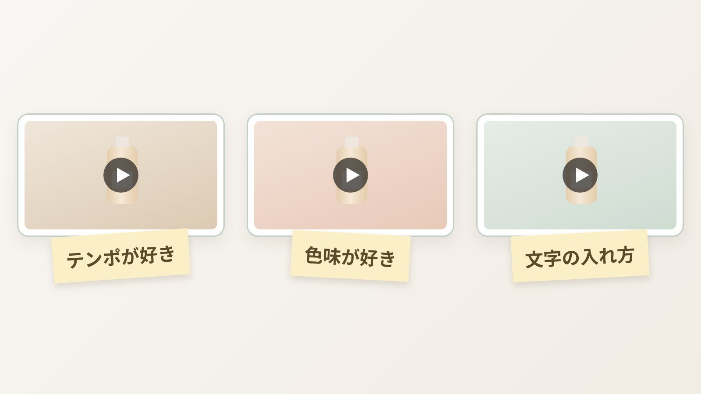

商品動画を外注するとき、仕上がりを大きく左右するのが、最初に渡す「指示書」です。とはいえ、「何を書けばいいのか分からない」「細かく書きすぎると、かえって伝わらない気がする」という声もよく聞きます。この記事では、700本以上の商品動画を作ってきた中で、「これがあると本当に助かる」と感じる指示書の書き方を、コピーして使えるテンプレートつきでご紹介します。
指示書は「完璧」でなくていい
最初にお伝えしたいのは、指示書は完璧である必要はない、ということです。むしろ、細かいカット割りまで決め込むより、「何のための動画か」「何を伝えたいか」がはっきりしているほうが、制作者は力を発揮できます。
「おしゃれ」「売れそう」は、人によって思い浮かべるものがまったく違います。誰に、どんな場面で、何を感じてほしいかを書くだけで、イメージのずれはぐっと減ります。
指示書に書きたい7つの項目
- 動画の目的と載せる場所
Amazonの商品ページ用なのか、広告用なのか、SNS用なのか。目的が変わると、尺もテンポも変わります。 - いちばん伝えたいこと（1〜3個）
ここが指示書の心臓部です。多くても3個までに絞ってください。 - ターゲット
年代や性別よりも、「どんな悩みを持っている人か」「どんな場面で使う人か」が分かると助かります。 - 雰囲気・トーン
明るくナチュラル、高級感、ポップなど。言葉より、参考動画のURLが一番確実です。 - 入れてほしい・入れてほしくないもの
必ず見せたい機能や付属品、逆に映したくないもの（旧パッケージなど）。 - 表現のルール
ブランドとして避けたい言い回しや、薬機法まわりの社内基準があれば共有を。 - 仕様と納期
尺、横型・縦型、本数、掲載したい日。
コピーして使える、指示書テンプレート
このままコピーして、埋められるところだけ埋めて送っていただければ十分です。空欄があっても大丈夫です。
| 項目 | 記入例 |
|---|---|
| 商品名・URL | 〇〇（商品ページのURL） |
| 載せる場所 | Amazonの商品ページ（のちに広告にも使いたい） |
| 尺・サイズ | 45秒・横型（16:9） |
| いちばん伝えたいこと | ①片手で使える ②手入れが簡単 ③収納しやすいサイズ |
| ターゲット | 朝の支度を少しでも楽にしたい、共働きの方 |
| 使う場面 | 平日の朝のキッチン |
| 雰囲気 | 明るくナチュラル（参考動画：URL） |
| 必ず入れたいもの | 付属の専用ブラシ、パッケージ |
| 入れたくないもの・表現 | 「最強」「No.1」などの表現 |
| レビューでよくある声 | 「思ったより小さい」という声がある |
| 納期 | 〇月〇日のセールまでに掲載したい |
参考動画の選び方・伝え方

参考動画は、言葉では伝えにくいイメージを共有できる、いちばんの近道です。ただし、伝え方にはちょっとしたコツがあります。
- 「どこが好きか」を一言添える：「テンポ感」「色味」「テキストの入れ方」など。動画全体を真似してほしいのか、一部だけなのかで、作り方が変わります。
- 同じジャンルでなくてもOK：化粧品の動画を参考に、雑貨の動画を作ることもできます。雰囲気を伝えるための参考だからです。
- 「こうはしたくない」動画もヒントになる：避けたいイメージが分かると、方向性がぐっと絞れます。
書かなくていいこと
逆に、最初からがんばって書かなくていいものもあります。
- 細かいカット割り：構成から相談する場合は、制作側に任せたほうが、商品の見せ方の引き出しを活かせます。
- 撮影の技術的な指定：カメラの設定や照明などは、制作側で判断します。
- 長い商品説明：説明書や商品ページのURLを添えていただければ十分です。
構成の組み立て方について詳しく知りたい方は、45秒の構成の作り方もあわせてどうぞ。
よくある質問
指示書がないと依頼できませんか？
いいえ、なくても大丈夫です。ヒアリングをしながら、こちらで内容を整理します。商品のURLと「いちばん伝えたいこと」が分かれば、十分スタートできます。
絵コンテは必要ですか？
必要ありません。nanase worksでは、構成のご提案を文字で映像の流れや内容をまとめた形でお出ししています。
指示書はどんな形式で送ればいいですか？
形式は自由です。メールやチャットの本文、テキストファイル、スプレッドシートなど、作りやすい形でお送りください。
途中でイメージが変わった場合はどうなりますか？
撮影前であればご相談いただけます。撮影や編集が進んだあとの大きな変更は、追加の作業が必要になることがあるため、気になる点は早めにお知らせください。
最後に
指示書は、制作者への「お願い」のリストというより、同じゴールを共有するための地図のようなものだと思っています。ゴールさえ共有できていれば、細かいところはプロに任せていただいて大丈夫です。
「うまく書けないけど相談したい」という方も、どうぞそのままご連絡ください。お話を聞きながら、一緒に整理していきます。
指示書がなくても、まずはお気軽に
nanase worksでは、丁寧なヒアリングから構成のご提案まで一緒に進めます。初稿からほぼ修正不要だったというお声も多くいただいています。